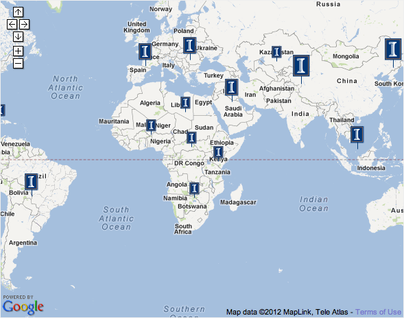

What is IPS?
- Facilitating the development of vibrant linkages between Illinois and institutions around the world
- Supporting scholarship on global and international issues campus-wide
- Serving as the interface of the campus with international officials and dignitaries
- Providing opportunities for all Illinois students to acquire global competency
- Sharing international expertise with the community
- Fostering a dialogue about critical international issues on our campus
- Strengthening campus efforts to host the strongest international students and scholars
- Gathering, managing and disseminating information about the international dimension of the campus
- Initiating and implementing policies that guide and support the multifaceted and diverse international activities on campus
What is Illinois International?
The University of Illinois at Urbana-Champaign is a recognized leader in international education, research and engagement. With a strong commitment to international initiatives both at the campus level and within individual colleges, internationalization is increasingly embedded in all aspects of the academic life on campus.
Illinois is committed to promoting and developing study abroad opportunities for its students. It has seen tremendous growth not only in the total number of students studying abroad, but also in the variety of programs and destinations and in the diversity of disciplines. According to the most recent issue of Open Doors, the annual survey of international education in the United States published by the Institute for International Education (IIE), the campus ranked 13th in the country in the number of study abroad students in 2008–2009 with 1,999 students.
Illinois supports study abroad through a central Study Abroad Office as well as dedicated staff in major colleges. In a reflection of our students’ commitment to and interest in international education experiences, the student body voted in 2011 to continue a fee of $5 per semester in support study abroad scholarships. The fee generates about $250,000 per year, significantly augmenting the campus’ financial support for students learning abroad, estimated at more than $800,000 per year.
The University of Illinois at Urbana-Champaign maintains over 200 active institutional linkages with international partners representing more than 40 different countries around the world. These agreements range from student exchanges—some now entering their third decade of activity—to faculty exchange and collaborative research agreements with national research agencies, to innovative joint educational programs leading to dual or multi-institutional degrees.
The campus has one of the largest international student enrollments in the country. 7,271 international students are currently enrolled at Illinois, placing the campus first among public universities in the U.S. and second among all American institutions of higher education. The campus also ranks highly in the number of international scholars, with 1,787 in 2010-2011, placing it 13th in the country.
Illinois hosts a total of six federally funded U.S. Department of Education Title VI Centers in international and area studies, each focusing on a different world region or issue. They include National Resource Centers on East Asian and Pacific Studies; European Union Studies; Global Studies; Latin American and Caribbean Studies; Russian, East European and Eurasian Studies; as well as a Center on International Business Education and Research. Over 600 faculty from all colleges on campus are affiliated with one or more of these centers. Additional centers within the Office of International Programs & Studies include the Program on Arms Control, Disarmament and International Security; the Women and Gender in Global Perspectives Program; and the International Forum on U.S. Studies.
The Illinois library—the largest public academic research library in the U.S.–holds well over four million volumes in support of international studies. Foremost among the collections is the Slavic and East European Library, the third largest collection in North America. The Asian Library has strong collections in Chinese, Japanese, Korean, Arabic, Hebrew, Indic, Persian, Vietnamese, and Thai. The Latin American and Caribbean collection is the nation’s fourth largest. The Library’s internationally renowned Mortenson Center for International Library Programs has a long tradition of providing librarians from around the world with continuing education.
Illinois’ international achievements have not gone unnoticed. In 2008, Illinois was recognized for its international achievements with the prestigious Senator Paul Simon Award for Campus Internationalization, awarded annually by NAFSA: Association of International Educators. Former Chancellor Richard Herman was honored for his strategic vision and international education efforts with the 2009 Michael P. Malone International Leadership Award by the Association for Public and Land Grant Universities (APLU).
Illinois Around the World
IPS Executive Staff Bios
[Table goes here.]
Employment Opportunities
Assistant Director
Office of International Student and Scholar Services (ISSS)
International Programs and Studies
University of Illinois at Urbana-Champaign
Primary Function:
This position will provide advising support to international students on matters related to immigration and visa regulations, and acclimation to the university and community environments. The position places a special emphasis on the creation and coordination of programmatic activities for international students, including those that foster interaction with domestic student populations.
Duties and Responsibilities:
- Advise students on a variety of matters including immigration and visa regulations, cultural adjustment, personal matters, financial concerns, and university procedures.
- Provide leadership for social and cultural programs, with a special emphasis on those that foster social interaction or cross-cultural learning on the campus and in the community.
- Coordinate annual Indoor World Cup Soccer Tournament, Trivia Night, Fun Night, and orientation receptions and mixers.
- Serve as liaison and conduct outreach with international student organizations and with campus units to help fulfill the mission of ISSS.
- Serve as liaison to Campus Recreation, the University YMCA, and other groups for the purpose of program development and coordination.
- Implement programs designed to enhance the interaction and learning between international and domestic students; engage in collaborative programming and workshops with ISSS staff and others on campus.
- Supervise volunteers and student help.
Organizational Relationship:
This position reports directly to the Director of International Student and Scholar Services who reports to the Associate Provost for International Affairs who reports to the Provost.
Minimum Qualifications:
- Bachelor’s Degree
- Experience in international student and/or scholar affairs.
- Ability to work effectively with individuals from varied administrative, academic, cultural, religious, national, ethnic and linguistic backgrounds.
- Strong interpersonal communication skills, both oral and written.
- Demonstrated ability to effectively plan, organize, and implement programs.
- Sound computer skills.
Preferred Qualifications:
- Experience designing and implementing large-scale programs and activities.
- Familiarity with cross-cultural communication.
- Knowledge of University academic and administrative policies and procedures.
- First-hand experience working or studying in a foreign country.
Salary: Salary will commensurate with experience.
Appointment Status: Regular, 100% appointment
Proposed Starting Date: As soon as possible after the closing date.
Application Procedures:
Please create your candidate profile at http://jobs.illinois.edu and upload your cover letter, resume and the names and contact information of three professional references by 3/22/12. All requested information must be submitted for your application to be considered. For questions regarding the position, contact Martin McFarlane at (217) 333-1303 or ips-jobs@illinois.edu.
The University of Illinois is an Affirmative Action/Equal Opportunity Employer. The administration, faculty and staff embrace diversity and are committed to attracting qualified candidates who also embrace and value diversity and inclusivity.
IPS Staff Directory
[Table goes here.]
Room Reservations
https://apps.atlas.illinois.edu/isbrooms/Calendars/Calendars.aspx 
Rankings
Open Doors
Open Doors ranks Illinois 13th in the nation’s “top 20 Doctoral/Research Institution” for total number of study abroad students and second (first among publics) in international students for 2010.
Top in International Education
In 2008, Illinois was recognized for its international achievements with the prestigious Senator Paul Simon Award for Campus Internationalization, awarded annually by NAFSA: Association of International Educators. Former Chancellor Richard Herman was honored for his strategic vision and international education efforts with the 2009 Michael P. Malone International Leadership Award by the Association for Public and Land Grant Universities (APLU).
Illinois Ranks High Among National and International Institutions
In 2009, the Institute for Higher Education at Shanghai Jia Tong University ranked Illinois as the 25th best university in the world and the 19th best university in America.
The 2009 Washington Monthly College National Rankings lists Illinois as 24th in the nation.
The Academic Ranking of World Universities (ARWU) ranks the University of Illinois as 25th in the World (2009); 3rd World rank in Engineering/Technology and Computer Sciences (2009); 17th World rank in Life and Agriculture Sciences (2009); 21st World rank in Natural Sciences and Mathematics (2009)
PC Magazine (Dec 2006) ranks Illinois 6th “Most Connected, Plugged-in, and High-Tech Campus in the Country.”
Illinois ranks 21st in the Peace Corps’ 2009 Top Universities and Colleges (large university category)